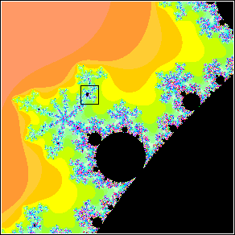
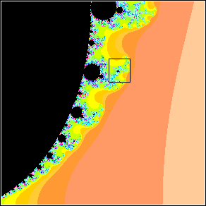
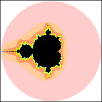
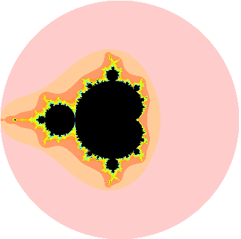

One of the early surprises of the Mandelbrot set is that its periphery is filled with a halo of tiny copies of the entire set, each of which is surrounded by its own halo of still tinier copies, and so on, on smaller and smaller scales, without end.
Unlike the Koch curve and Sierpinski gasket, whose magnifications look exactly like the whole shape, the small copies of the Mandelbrot set are subtly distorted, and surrounded by patterns of decorative filigrees unique to each copy.
It is this combination of familiarity (small copies of the Mandelbrot set) and novelty (subtly distorted, differently decorated) that make the Mandelbrot set much more interesting than the fractals generated by IFS.
Here are two sequences of magnifications.
| Here we go into the valley between the main cardioid and the largest disc attached to it. | Here we go into the cusp of the main cardioid. | |
|  |  | Click the picture to magnify the box. | Click the picture to magnify the box. |
Here are two animated sequences of magnifications.
|  |  | |
| Click the picture to return to the full Mandelbrot set. | Click the picture to animate. |
Return to the Mandelbrot set.